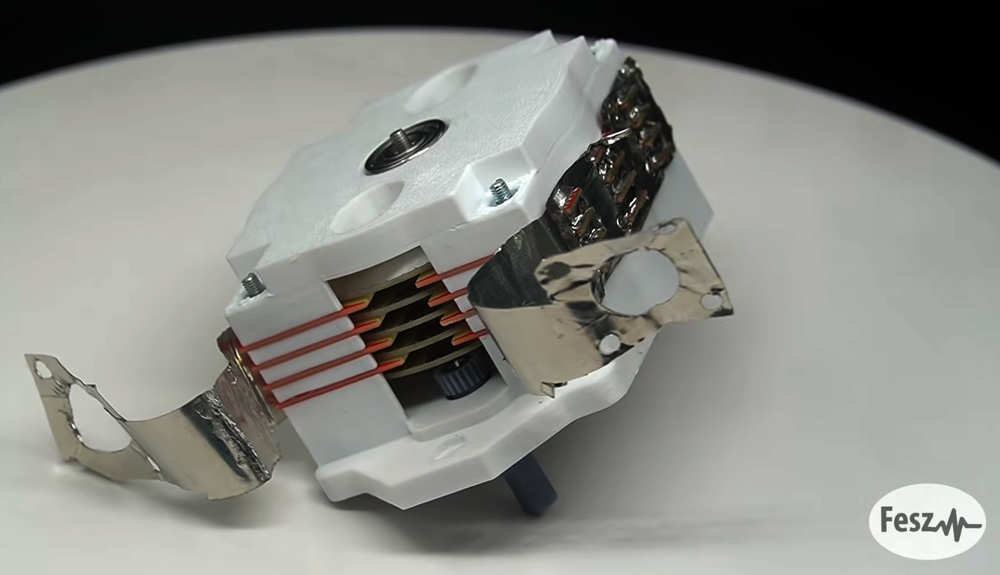
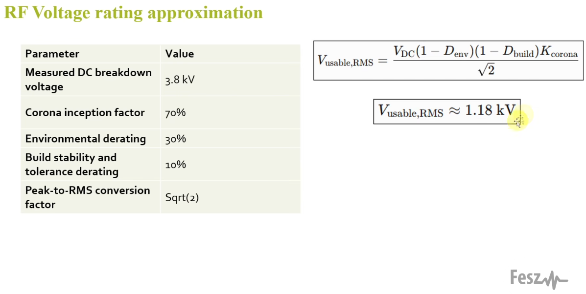
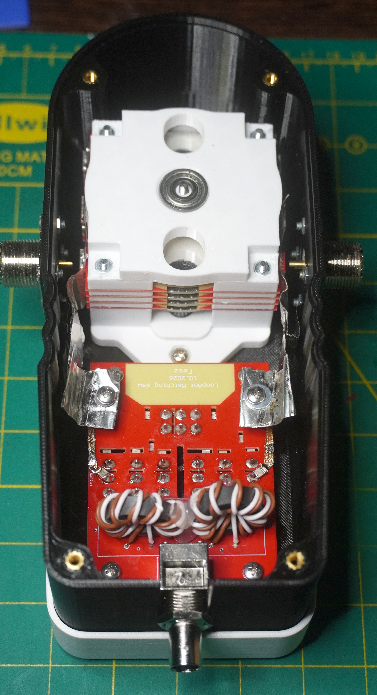
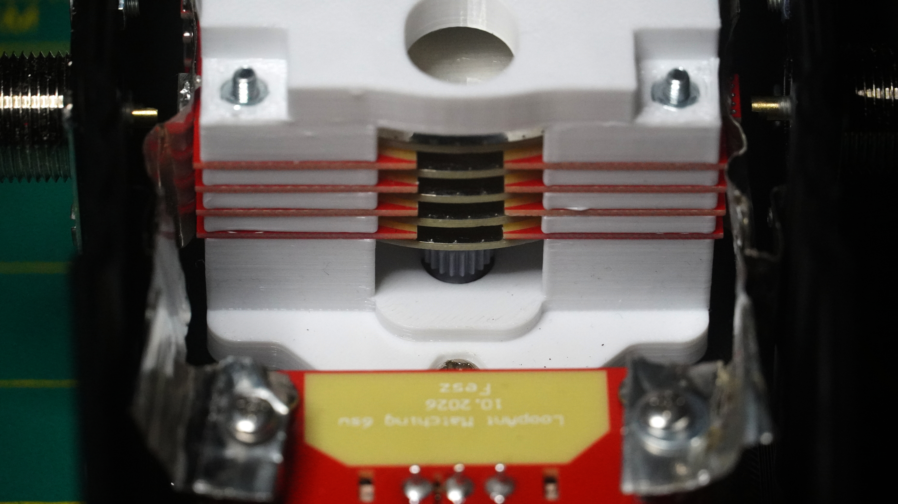
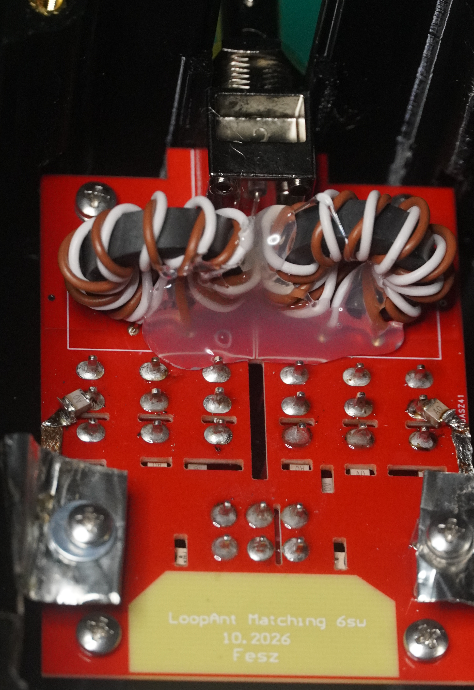
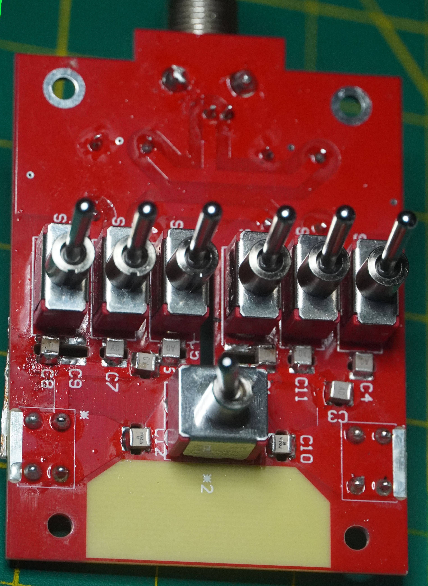
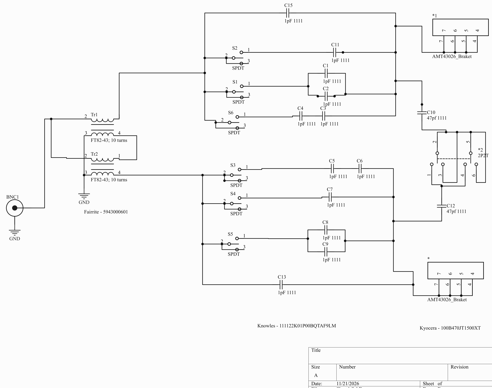

Information about the butterfly PCB air capacitor, including 3D models and Gerber files: github.com/FeszElectronics/DIY-Variable-Capacitor
YouTube video: https://youtu.be/tf2oflHAvQ0
| One half of the capacitor | |||
| Plate thickness | dp | 1 | mm |
| Clearance | dc | 1 | mm |
| Plate spacing | ds = 2 dc + dp | 3 | mm |
| Stator plates | ns | 4 | |
| Rotor plates | nr | 5 | |
Total air gap for both capacitors in series: 1 mm.
Rule of thumb for dielectric strength: 3 kVp/mm.
Up = 3 kVp.
Urms = Up / √2 = 2.1 kV.
Measured values:

The antenna is operated at 5 W as this is the limit of the transmitter. The limit of the antenna is higher.





Depending on the band, 23.5 pF can be switched in parallel with the air capacitor.
S1P filename: L = 23.5 pF switched in parallel; H = not switched in.
The coupling can be adjusted with switches.
Further details are explained in the videos.